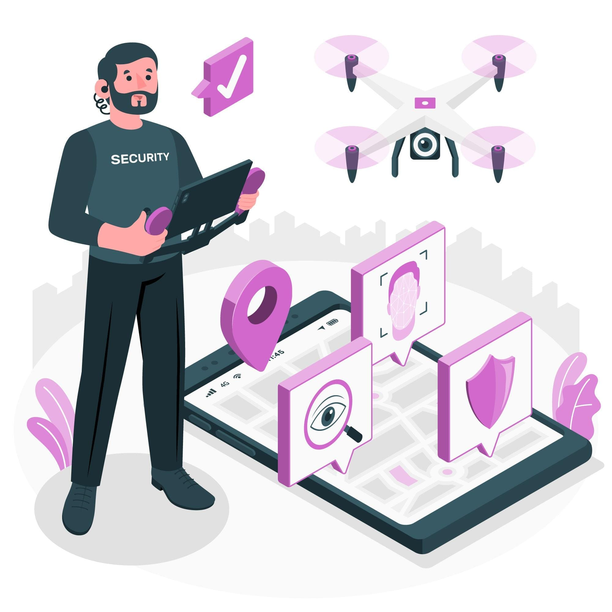

A importância da segurança em eventos de grande porte.

Introdução:
A realização de eventos de grande porte é uma prática comum em todo o mundo, seja para comemorar festividades, promover atividades culturais, esportivas, educacionais ou comerciais. No entanto, à medida que o tamanho e a complexidade desses eventos aumentam, também aumentam os desafios e responsabilidades em garantir a segurança de todos os participantes, funcionários e colaboradores envolvidos. A segurança em eventos de grande porte é uma questão crucial que não pode ser ignorada, pois qualquer incidente pode resultar em sérias consequências para a vida das pessoas e a reputação do evento.
A preservação da integridade e bem-estar dos participantes é uma das maiores responsabilidades dos organizadores de eventos de grande porte. A segurança é uma questão crucial, pois a aglomeração de um grande número de pessoas em um espaço limitado pode criar riscos significativos para a sua segurança e saúde. Acidentes, como quedas, escorregões, empurrões, tumultos e até mesmo incêndios, podem ocorrer em situações de aglomeração e representam ameaças reais à integridade física dos participantes.
Para garantir a segurança dos participantes, é essencial implementar medidas preventivas desde a fase de planejamento do evento. Antes de mais nada, é importante realizar uma análise de riscos detalhada, identificando as possíveis situações de perigo e vulnerabilidades específicas do local. Com base nessa análise, os organizadores podem desenvolver um plano de segurança abrangente, que inclua procedimentos de emergência, evacuação, primeiros socorros, e outros protocolos relevantes.
O controle de acesso é uma das principais medidas preventivas para eventos de grande porte. Garantir que apenas pessoas autorizadas tenham acesso ao evento e aos diferentes setores dentro dele é essencial para evitar aglomerações desnecessárias e reduzir o risco de tumultos. Além disso, a instalação de sistemas de sinalização e direcionamento dos participantes ajuda a evitar confusões e garantir a fluidez do fluxo de pessoas.
A infraestrutura do evento também desempenha um papel importante na segurança dos participantes. É essencial garantir que todas as estruturas, como palcos, arquibancadas, barracas e estandes, estejam corretamente montadas e seguras para uso. A realização de inspeções regulares durante o evento também é fundamental para verificar se não há riscos adicionais, como desgaste de materiais ou instabilidades.
O treinamento adequado da equipe de segurança e de funcionários envolvidos no evento é essencial para garantir uma resposta rápida e eficiente em caso de emergência. Esses profissionais devem estar preparados para identificar situações de risco, agir rapidamente para mitigar ameaças e fornecer assistência aos participantes em caso de acidentes ou situações de emergência.
Os organizadores devem estabelecer um plano de evacuação claro e eficiente, com rotas de fuga bem sinalizadas e pontos de encontro pré-determinados. A realização de simulados de evacuação antes do evento pode ajudar a garantir que todos os envolvidos estejam cientes das rotas e procedimentos a serem seguidos em caso de necessidade.
Além disso, é importante garantir que o evento esteja em conformidade com as regulamentações de segurança locais e nacionais. Isso inclui a obtenção de todas as licenças e autorizações necessárias, bem como a adesão aos padrões de segurança específicos para eventos de grande porte.
A comunicação eficaz com os participantes também é uma ferramenta importante para garantir a segurança. A disponibilização de informações claras sobre as medidas de segurança adotadas, bem como instruções sobre como agir em caso de emergência, pode ajudar a reduzir a ansiedade dos participantes e garantir que eles estejam cientes das ações que devem ser tomadas para garantir sua segurança.
Por fim, é fundamental realizar uma avaliação pós-evento para analisar o desempenho das medidas de segurança adotadas e identificar possíveis melhorias para eventos futuros. A aprendizagem com experiências passadas é essencial para aprimorar continuamente os protocolos de segurança e garantir a integridade e bem-estar dos participantes em eventos de grande porte. A segurança é uma responsabilidade compartilhada entre os organizadores, participantes e colaboradores, e somente com um esforço conjunto pode-se garantir que todos possam desfrutar do evento com tranquilidade e segurança.
Responsabilidade legal e reputação do evento:
A responsabilidade legal em garantir a segurança em eventos de grande porte é um aspecto de extrema importância para os organizadores. Em muitos países, existem leis e regulamentos específicos que estabelecem padrões mínimos de segurança para eventos públicos. Essas normas são elaboradas para proteger a integridade física e o bem-estar dos participantes, colaboradores e terceiros envolvidos no evento. O não cumprimento dessas leis pode resultar em consequências legais graves, incluindo multas, sanções e até mesmo a suspensão ou cancelamento do evento.
Além das questões legais, a reputação do evento e dos organizadores também está em jogo quando se trata de segurança. Eventos de grande porte costumam atrair grande atenção da mídia e do público em geral. Qualquer incidente grave relacionado à segurança pode causar danos significativos à imagem do evento e dos responsáveis por sua organização. Uma má reputação pode afastar patrocinadores, parceiros e até mesmo os próprios participantes em futuras edições, o que pode impactar negativamente o sucesso do evento a longo prazo.
Dessa forma, a adoção de medidas de segurança adequadas e a conformidade com as leis e regulamentos são essenciais para demonstrar o comprometimento dos organizadores com a segurança dos envolvidos e contribuir para a construção de uma imagem positiva e confiável do evento.
Prevenção de incidentes e crises:
A segurança em eventos de grande porte tem como objetivo principal prevenir a ocorrência de incidentes e crises que possam colocar em risco a integridade física e o bem-estar dos participantes. A prevenção é sempre mais eficaz e menos dispendiosa do que a reação a situações de emergência. Portanto, a implementação de medidas preventivas é fundamental para evitar problemas maiores.
Entre as principais medidas preventivas estão a realização de análises de risco detalhadas, identificando possíveis situações de perigo e vulnerabilidades específicas do local e do evento. A partir dessa análise, os organizadores podem desenvolver um plano de segurança abrangente, que inclua medidas como controle de acesso, sinalização adequada, treinamento de equipe de segurança e colaboradores, definição de pontos de encontro em caso de evacuação, entre outras.
Além disso, a preparação adequada para lidar com situações críticas é essencial para garantir uma resposta rápida e eficaz em caso de emergência. Isso inclui a realização de simulados de evacuação e treinamentos de primeiros socorros para garantir que todos os envolvidos estejam cientes dos procedimentos a serem seguidos em caso de necessidade.
A prevenção de incidentes e crises também envolve a manutenção adequada da infraestrutura do evento, garantindo que todas as estruturas e equipamentos estejam em boas condições de uso e segurança. Inspeções regulares durante o evento também são fundamentais para verificar se não há riscos adicionais, como desgaste de materiais ou instabilidades.
Conforto e confiança dos participantes:
A sensação de segurança é um fator determinante para o conforto e a confiança dos participantes em eventos de grande porte. Quando os participantes se sentem seguros, eles podem aproveitar melhor o evento, se envolver nas atividades propostas e desfrutar da experiência de forma tranquila e prazerosa.
Por outro lado, a falta de segurança pode gerar desconforto e ansiedade, resultando em uma experiência negativa para os participantes. A sensação de insegurança pode fazer com que os participantes evitem certas áreas do evento, tenham receio de participar de algumas atividades ou até mesmo optem por sair do evento antes do planejado.
Portanto, garantir a segurança é fundamental para proporcionar aos participantes um ambiente agradável e seguro, permitindo que eles se sintam à vontade para explorar o evento e aproveitar ao máximo tudo o que ele tem a oferecer.
Coordenação e colaboração entre diferentes órgãos e entidades:
Eventos de grande porte geralmente envolvem a colaboração de várias entidades, como organizadores, autoridades locais, serviços de emergência, segurança privada e fornecedores. A segurança efetiva depende de uma coordenação eficiente entre esses diferentes atores, garantindo que todos estejam alinhados com os protocolos de segurança e preparados para agir de forma integrada em caso de emergência.
Uma das formas de garantir essa coordenação é através da realização de reuniões prévias ao evento, onde são discutidos e alinhados todos os aspectos relacionados à segurança. Cada entidade deve compreender claramente o seu papel e responsabilidade no contexto geral da segurança do evento.
Por exemplo, as autoridades locais podem ser responsáveis pelo controle de tráfego e acesso às áreas adjacentes ao evento, enquanto os serviços de emergência devem estar preparados para atuar em situações de acidentes ou outras emergências médicas. A segurança privada pode ser encarregada do controle de acesso e da vigilância de determinadas áreas.
a comunicação eficiente entre essas entidades durante o evento é fundamental para garantir que qualquer situação que exija ação coordenada seja prontamente identificada e tratada.
Proteção do patrimônio e infraestrutura do evento:
Além da segurança dos participantes, é importante considerar a proteção do patrimônio e da infraestrutura do evento. Danos ou incidentes que causem prejuízos materiais podem afetar a continuidade do evento e resultar em perdas financeiras para os organizadores.
A segurança patrimonial envolve a adoção de medidas de prevenção contra furtos, vandalismo e outros tipos de danos ao patrimônio do evento. Isso pode incluir o uso de câmeras de segurança, a contratação de equipes de segurança privada para patrulhar as áreas mais vulneráveis, e a implementação de procedimentos de controle de acesso para garantir que apenas pessoas autorizadas tenham acesso a determinadas áreas.
a manutenção adequada das estruturas e equipamentos do evento também é fundamental para garantir a sua integridade e segurança. Inspeções regulares durante o evento são importantes para identificar e corrigir qualquer problema ou desgaste que possa representar um risco.
Planejamento de segurança abrangente:
O planejamento de segurança para eventos de grande porte deve ser abrangente e considerar todas as etapas do evento, desde o projeto até a desmontagem. Ele deve ser elaborado de forma integrada com o planejamento geral do evento e envolver todas as partes interessadas, desde os organizadores até as entidades de segurança e emergência.
Uma análise detalhada de riscos é um dos pilares do planejamento de segurança. Essa análise deve considerar fatores como o número esperado de participantes, o local do evento, as atividades planejadas, as condições climáticas, entre outros aspectos relevantes. A partir dessa análise, os organizadores podem identificar os riscos mais significativos e desenvolver estratégias para mitigá-los.
O plano de segurança deve incluir medidas preventivas, como controle de acesso, sinalização adequada, treinamento de equipe de segurança e colaboradores, e definição de protocolos de emergência. Além disso, deve-se estabelecer uma estrutura de comando e controle clara, determinando as responsabilidades de cada membro da equipe de segurança e garantindo uma comunicação eficiente em caso de emergência.
A realização de simulados de evacuação e treinamentos periódicos de primeiros socorros é uma prática importante para garantir que todos os envolvidos estejam preparados para agir de forma adequada em situações de emergência.
É fundamental que todos os colaboradores e fornecedores envolvidos no evento estejam cientes e alinhados com as medidas de segurança adotadas. A conscientização de todos os envolvidos é essencial para garantir que as medidas preventivas sejam efetivamente implementadas.
o planejamento de segurança deve ser flexível e adaptável, permitindo ajustes e atualizações à medida que as circunstâncias do evento evoluem. É importante estar preparado para lidar com situações imprevistas e garantir que todos os aspectos relacionados à segurança estejam sob controle durante todo o evento.
conclusão
A segurança em eventos de grande porte é uma questão crucial que deve ser tratada com extrema seriedade e comprometimento. A preservação da integridade e bem-estar dos participantes, a responsabilidade legal, a reputação do evento, a prevenção de incidentes e crises, o conforto e confiança dos participantes, a coordenação entre diferentes órgãos e entidades, a proteção do patrimônio e infraestrutura do evento, e um planejamento de segurança abrangente são aspectos interligados que exigem atenção especial dos organizadores.
Garantir a segurança em eventos de grande porte requer uma abordagem multidisciplinar, que envolve desde a análise de riscos e a adoção de medidas preventivas até a preparação para lidar com situações de emergência de forma eficaz. O controle de acesso, a sinalização adequada, o treinamento da equipe de segurança e colaboradores, e a comunicação eficiente com os participantes são fundamentais para proporcionar um ambiente seguro e confortável.
Além disso, a colaboração entre diferentes entidades e a conformidade com as regulamentações de segurança são essenciais para garantir uma atuação integrada e eficiente em caso de necessidade. A segurança é uma responsabilidade compartilhada, e todos os envolvidos no evento devem estar cientes de seu papel na garantia de um ambiente seguro para todos.
A importância da segurança em eventos de grande porte não pode ser ignorada, pois qualquer incidente pode resultar em sérias consequências para a vida das pessoas e para a reputação do evento. Os organizadores devem considerar a segurança como uma prioridade absoluta em todas as etapas do evento, desde o planejamento até a sua realização.
Por fim, a aprendizagem contínua com experiências passadas e a avaliação pós-evento são essenciais para aprimorar continuamente os protocolos de segurança e garantir que eventos futuros sejam ainda mais seguros e bem-sucedidos. Com um planejamento abrangente e medidas adequadas, é possível realizar eventos de grande porte de forma segura, proporcionando uma experiência positiva e memorável para todos os participantes, colaboradores e envolvidos. A segurança deve ser sempre uma prioridade para garantir o sucesso e a satisfação de todos os que fazem parte desses momentos especiais.